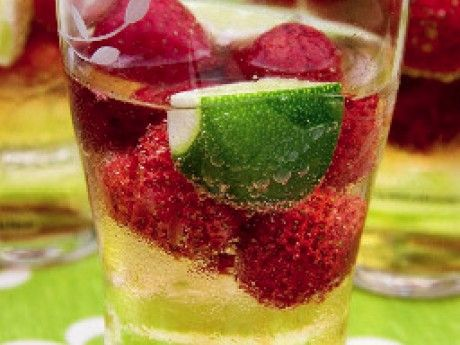

12 cócteles refrescantes y deliciosos para animar tus tardes de verano
2021.12.15 07:55
Ir directo al contenido Quizzes Sign In
Acerca
Acerca Advertise Investor Relations Empleos Merch Newsletters Edition US UK Australia Brasil Canada Deutschland India Japan Latam California residents can opt out of sales of personal data. Do Not Sell My Personal Information © 2021 BuzzFeed, Inc Prensa RSS Legal Consent Preferences Acuerdo de usuario Ad Choices Help Contacta Sitemap Food · Posted on 26 jun. 201812 cócteles refrescantes y deliciosos para animar tus tardes de verano
Aconsejamos no probarlos todos la misma tarde.
by Beatriz SerranoRedactora de BuzzFeed, España
1. Aperol Spritz.
bakerbynature.comEl Aperol Spritz es un cóctel italiano refrescante y con un puntito amargo que te hará sentirte como el protagonista de una película de Fellini que parece que está viviendo la dolce vita pero luego siempre termina solo.
Ingredientes : 30 ml de vino espumoso (proseco, cava, espumante), 20 ml de Aperol, 10 ml de soda o agua con gas, hielo y una rodaja de naranja.
Preparación : pon un par de rocas de hielo en una copa de vino tinto, añade el Aperol, el vino y un chorrito de soda y adornar con una rodaja de naranja.
2. Margarita on the rocks .
whiteonricecouple.comTan refrescante como peligroso este cóctel tiene la facultad de entrar como la seda y darte buenos pelotazos. Recomendamos consumirlo con moderación.
Ingredientes : 25 ml de Cointreau, 50 ml de tequila, 1 cucharadita de sirope de ágave, 25 ml de lima recién exprimida y sal.
Preparación : moja el borde de un vaso bajo con un poquito de lima y ponle sal, agita el resto de los ingredientes en una coctelera con hielo picado y sírvelo.
3. Mojito.
chefsavvy.comEl mojito es uno de los reyes del verano: el toque de menta o hierbabuena le da el punto de frescor que necesitamos en estas tardes tan calurosas.
Ingredientes : 2 cucharaditas de azúcar blanco, hojas de hierbabuena (o menta), 30 ml de zumo de lima, 60 ml. de ron cubano, 120 ml de soda y, opcionalmente, unas gotitas de angostura.
Preparación : añade el azúcar y el zumo de lima en un vaso tipo Fizz y dale con el mortero hasta que se diluya. A continuación añade las hojas de hierbabuena y vuelve a darle suavemente con el mortero sin machacarlas del todo. ¿Listo? Ahora añade el ron, hielo picado y rellena el espacio sobrante con soda.
4. Piña colada facilísima.
danzadefogones.comO como a mí me gusta llamar a este cóctel: SMOOTHIE CON ALCOHOL.
Ingredientes : 75 ml de ron añejo, 90 ml de zumo de piña, 30 ml de crema de coco y hielo.
Preparación : mete todos los ingredientes en la batidora y bate sin miedo, para que no queda demasiado acuoso, añade los cubitos de hielo poco a poco hasta encontrar tu textura ideal.
5. Negroni.
Rustic White Photography / waitingonmartha.comEl Negroni es uno de esos cócteles cuyas resacas te harán vagar por la casa agarrándote a los marcos de las puertas como Joan Crawford. ¡Puro glamour!
Ingredientes : 1/3 parte de Vermut rojo, 1/3 parte de Campari, 1/3 parte de ginebra.
Preparación : la recomendación principal es que las bebidas se sirvan ya frías y con rocas de hielo, puesto que lo peor que le puede pasar a un Negroni es aguarse. Siguiendo este consejo, mezcla los tres ingredientes en un vaso y remuévelo suavemente. Puedes añadir unas gotitas de limón para potenciar el sabor.
6. Bellini.
eat-drink-love.comEl Bellini es un cóctel originario de Venecia que bebían personalidades como Orson Welles o Ernest Hemingway. Quizás después de unos cuantos tú también crees alguna obra maestra.
Ingredientes : 2/3 de Prosecco (o en su defecto otro vino espumoso y seco), 1/3 de zumo de melocotón.
Preparación : mezclar los ingredientes bien fríos.
7. Caipirinha.
zestfulkitchen.comEste cóctel brasileño es tan delicioso como adictivo. Por cierto, si no te gusta la cachaça (o sencillamente no tienes una botella a mano), puedes cambiar este ingrediente por el vodka y hacerte una caipiroska.
Ingredientes : 80 mililitros de cachaça, 2 limas pequeñas, 2 o 3 cucharadas de azúcar blanco, 1 cucharada de zumo de limón y rodajas de limón para adornar.
Preparación : echa las limas y mézclalas con el azúcar ayudándote de un mortero, echa el zumo de limón y la cachaça y repite el proceso. Termina añadiendo hielo picado y adorna con rodajas de limón.
8. Sangría.
pizcadesabor.comOle, ole y ole: el elixir que hace que todos los turistas se terminen quemando al sol de las playas de Mallorca también es una delicia para nosotros.
Ingredientes: vino tinto, azúcar, limón y naranja, frutas varias, canela (opcional), un toque de limonada gaseosa y un chorrito de vermut rojo o brandy.
Preparación: mezclar el vino tinto, las frutas, la canela y el azúcar y dejar macerar un par de horas, antes de servir añadir la limonada gaseosa, el chorrito de vermut o de brandy y mucho hielo.
9. Long Island Iced Tea.
Bhofack2 / Getty ImagesLa bebida que consiguió burlar a Ley Seca (puesto que la gente parecía estar bebiéndose un té helado) también conseguirá burlar el caloret del verano.
Ingredientes: 30 ml de vodka, 30 ml de ginebra, 30 ml de ron, 30 ml de licor de Cointreau, 30 ml de tequila, 60 ml de refresco de cola y una rodaja de limón.
Preparación: mezclar todos los licores en el orden que te plazca, posteriormente exprimir un chorrito de limón encima y añadir la cola, remover y añadir hielo.
10. Agua de Valencia.
publicdomainpictures.netEsta bebida te hidrata al mismo tiempo que te pone pedal gracias al zumo. Eso sí, tendrás que beberla con cuidado porque entra como la seda y, mira, tampoco hidrata como un vaso de agua.
Ingredientes : cava, zumo de naranja, vodka, ginebra y azúcar.
Preparación : añadir 1/4 de zumo de naranja en una jarra de un litro, añade una botella de cava semi-seco, una copa de vodka y otra de ginebra y echa azúcar. Déjalo enfriar en la nevera antes de servirlo.
11. Tom Collins.
Bhofack2 / Getty ImagesEste cóctel te hará sentir como una señora que bebe sentada en el porche de su casa mientras espera la llegada de sus amigas para jugar al bridge, ¿y quién no quiere sentirse así?
Ingredientes : ginebra, zumo de limón, azúcar y soda.
Preparación : agitar la ginebra, el zumo de limón, el azúcar y el hielo y servirlo todo en un vaso de tubo, rellenar el espacio sobrante con soda.
12. Bloody Mary.
Ryzhkov / Getty ImagesPerfecto para engañar a tus familiares haciéndoles creer que estás bebiendo gazpacho.
Ingredientes : 1/3 de vodka, 2/3 de zumo de tomate, sal, pimienta, 3 gotas de salsa Worcestershire, 3 gotas de salsa Tabasco, un chorrito de zumo de limón y apio para decorar.
Preparación : antes que nada, pon en el borde del vaso sal gorda mojada en lima. Ve mezclando los ingredientes en el vaso (comenzando con el vodka y el zumo de tomate) y remueve hasta que se haya mezclado bien. Añade hielo y decora con un toque de apio.
¡Suscríbete a nuestra newsletter semanal!Share This Article
Get all the best Tasty recipes in your inbox! Sign up for the Tasty newsletter today!
